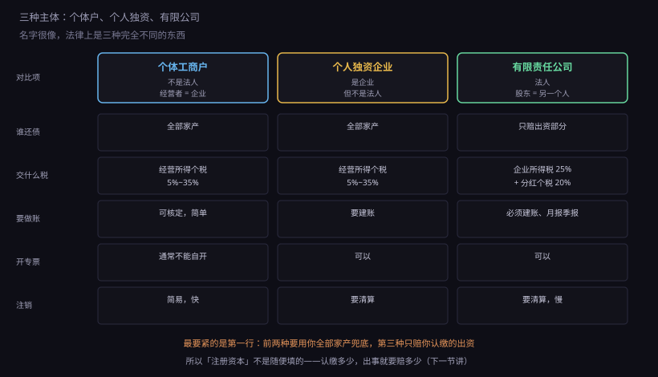
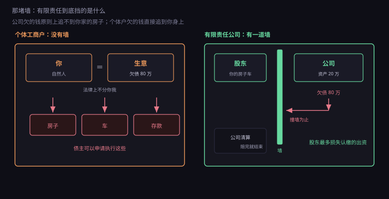
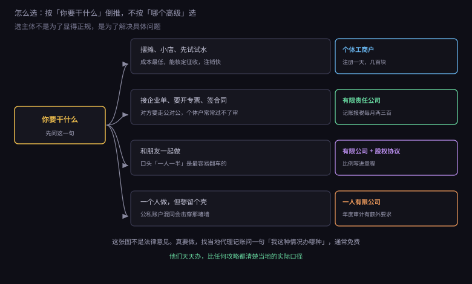

约 0.37 万字 · 3 张图 · 名字很像，法律上是三种完全不同的东西
法律上，"主体"指的是能独立承担权利义务的东西。 它能签合同、能欠钱、能被起诉、能当原告。
自然人是一个主体——你就是。但"你在做生意"这件事， 法律上需要另一个东西来承载：一个店铺名、一个执照、一个对公账户。 这个承载物就是经营主体。
为什么不能"我就是主体"？可以，个体户就是这么干的。 但代价是：生意的债，就是你个人的债。 生意亏了 80 万，债主可以申请执行你的房子、车、存款。 法律上不区分"这是生意欠的"和"这是我个人的"。
想让这两者分开，就得造一个"法律上的人"—— 一个虚拟的、能自己签合同、自己欠债、自己破产的东西。 这叫法人。
法人不是人，是一张纸上的实体。它有自己的名字（公司名）、 自己的身份证号（统一社会信用代码）、自己的住址（注册地址）、 自己的财产（注册资本和经营积累）。 它欠的钱，原则上只能用它的财产还，追不到股东身上。
这就是整个工商制度的核心：造一个虚拟的人，把风险和自然人隔开。 剩下的所有规则——注册资本、经营范围、年报、清算—— 都是围绕这个"虚拟人"设计的。
中国最常见的三种经营主体，名字很像，法律地位差得远。

个体工商户：最常见的"小买卖"形态。 楼下的小卖部、理发店、早餐摊，多半是这个。 它不是法人，经营者就是责任人， 营业执照上写的是"经营者：张三"，不是"法定代表人"。
它的好处是简单：可以不起字号（就叫"张三小吃店"）， 注册快，很多地方当场就能办，税务上常常可以"核定征收"—— 不用建复杂的账，按定额交税。
坏处也很直接：无限责任。 而且它不能开增值税专用发票（小规模纳税人可以自开普票， 专票要去税务局代开或者申请， 对方要抵扣就麻烦），很多企业采购不愿意跟个体户打交道。
个人独资企业：名字里有"企业"，但它也不是法人。 依据是《个人独资企业法》，一个自然人投资，财产为投资人所有， 投资人以其个人财产对企业债务承担无限责任。
它比个体户"正式"一点：有企业名称、能开对公账户、能刻公章、 能雇工、能开票。但它和个体户在责任上没有本质区别—— 企业财产不够还债，照样追到你个人。
现实中使用它的场景不多，很多时候是历史遗留或者特定行业习惯。 如果你是刚开始做，基本可以跳过它。
有限责任公司：是法人。 股东以认缴的出资额为限对公司承担责任， 公司以全部财产对债务承担责任。
它是目前最主流的形态，因为它同时满足三件事： 能签正式合同、能开专票、能把个人财产和公司债务隔开。 代价是要建账、要月报季报、要年报、注销麻烦。
顺带说一句"股份有限公司"——它是有限公司的升级版， 可以公开发行股份、上市。起步阶段用不到， 除非你要融资、要做股权激励，否则没必要。
"有限责任"这四个字，值得单独画一张图。

左边是个体户。你和生意之间没有边界， 生意欠 80 万，债主起诉的是你本人， 判决生效后可以查封你的房、拍卖你的车、划走你的存款。
右边是有限公司。公司欠 80 万，但公司只有 20 万资产， 剩下 60 万怎么办？公司破产清算，债主拿回 20 万，剩下 60 万消灭。 你作为股东，损失的是当初投进去的那部分，房子车子不受影响。
这道墙是现代社会最重要的制度发明之一。 没有它，没人敢创业——一次失败就要用一辈子还债。 有了它，失败的成本被限定在"投入的资本"以内， 人才敢去试错。
但这道墙不是无条件的。它有三个前提：
一、你得真的出资。 说好认缴 100 万，就得在期限内实际交进去 （2024 年新《公司法》要求五年内缴足）。 没交的部分，公司出事时你要补上。
二、你不能把公司钱当自己的钱。 公私账户混着用、拿公司钱买自家房子、用个人微信收公司货款—— 这些行为叫"人格混同"，法院可以判你承担连带责任，墙就没了。
三、你不能抽逃出资。 验资之后把钱转走、虚构债务把钱套出来， 这属于违法，股东要补足并可能担责。
一个人能不能开公司？能，叫"一人有限责任公司"。
但有个特殊规则，写在《公司法》里： 一人公司的股东，如果不能证明公司财产独立于自己的财产， 应当对公司债务承担连带责任。
注意这个举证责任是反的。普通公司是"债权人证明你混同"， 一人公司是"你自己证明没混同"。
怎么证明？主要靠两样东西： 每一年的财务会计报告，和独立的审计报告。 很多一人公司根本没做过审计，真出事时拿不出证据， 墙就自动倒了。
还有一个细节：一个自然人只能设立一个一人有限公司， 而且这个一人公司不能再设新的一人公司。 想开第二家，得拉一个股东进来（哪怕只占 1%）。
所以现实中的常见做法是：找家人或朋友持股 1%， 变成"两人公司"，绕开一人公司的特殊规则。 这不违规，但要注意那个 1% 股东也是登记在册的， 将来变更、签字、分红都要找他。
如果你确实要一个人做，两个建议： 公私账户绝对分开（公司收款只进对公户， 个人消费绝不从公司账走）， 每年做一次审计（虽然要花钱，但那是墙的地基）。
很多人以为"公司交的税比个体户多"，其实不一定。 关键差别在税种结构，不在税率高低。
个体户和个人独资：不交企业所得税， 只交个人所得税里的"经营所得"，5% 到 35% 超额累进。 很多地方对小额个体户实行核定征收， 按行业定额交，实际税负很低。
有限公司：两道税。 第一道，公司赚的钱交企业所得税，法定 25% （小型微利企业有优惠，实际可低到 5%）。 第二道，利润分给股东时，股东再交 20% 的股息红利个税。
所以如果公司赚 100 万，全部分给唯一股东： 先交企业所得税，再交 20% 分红税，到手明显少于 100 万。 而个体户赚 100 万，只交一次经营所得个税。
那为什么大家还开公司？因为：
公司可以不把钱分出来。 利润留在公司里继续投入，那 20% 的分红税暂时不用交。 个体户的钱只要进来就是个人的，当年就得交税。
公司能开专票。 你的客户如果是企业，它要拿专票抵扣进项税， 没有专票它要多交税，所以它不愿意跟你合作。
公司能承担有限责任。 这一条在上面的图里已经画过了，是很多人开公司真正的理由。
还有一个容易忽略的：增值税跟主体形态无关， 只跟规模有关。小规模纳税人按征收率（目前 1% 或 3%）， 一般纳税人按 6%、9%、13% 等税率，可以抵扣进项。 这部分下一章专门讲。
不要按"哪个高级"选，按"你要解决什么问题"倒推。

摆摊、小店、先试试水：个体户。 注册快、成本低、税务简单，赚的不多时税负也低。 真做大了再升级成公司，个体户可以"转型升级"， 很多地方有专门的通道。
接企业单、要开专票、签合同：有限公司。 这是最刚性的需求——不是你想不想要，是对方要不要。 大部分企业的采购流程里，供应商必须是"企业"， 个体户连投标资格都没有。
和朋友一起做：有限公司 + 白纸黑字的股权协议。 千万别用"口头一人一半"。 出钱比例、出力比例、决策权、退出机制、竞业限制， 这五件事必须在章程或股东协议里写清楚。 后面 8.6 会专门讲合同。
一个人做，但想留个壳：一人有限公司， 但要接受"公私必须分开 + 每年审计"的约束。 做不到这两点的话，这个壳其实不挡风险。
这里给一组实际数字（各地有差异，但量级差不多）。
| 项目 | 个体户 | 有限公司 |
|---|---|---|
| 注册 | 自己办免费，代办 0~300 元 | 自己办免费，代办 500~1500 元 |
| 刻章 | 几十到两百 | 公章、财务章、法人章、发票章，几百 |
| 注册地址 | 可用经营场所，要求较松 | 要商用地址，没有就挂靠，1000~3000 元/年 |
| 记账报税 | 可核定，自己报，几乎零成本 | 必须找代账，2000~4000 元/年 |
| 银行账户 | 可开可不开 | 必须开对公户，年费几百 |
所以有限公司的真实门槛不是注册费，是每年固定的维护成本： 代账 2000 多、地址 1000 多、银行年费几百， 加起来一年四千左右。
这个数字很重要。如果你一年的生意额只有两三万， 养公司的成本会吃掉大部分利润。 这种情况下，个体户或者干脆"先不注册、以个人身份接活" 反而更划算——只是开不了专票，对方可能不认。
再提醒一句：注册公司不需要验资，但认缴的钱是要还的。 2024 年新《公司法》规定认缴出资要在五年内缴足。 有人随手写"注册资本 1000 万"图个好看， 结果五年内要真金白银交进去 1000 万， 交不出来就是违约，还可能被强制减资或承担责任。 注册资本写多少，按你实际能拿出多少来定。
开的时候很容易，关的时候很麻烦。这是所有经营主体的共同特点。
个体户相对简单，很多地方可以"简易注销"： 没有债权债务、没有领过发票的，网上公示几天就能注销。
有限公司就麻烦了。要走完整流程： 清算组备案 → 登报或公示 45 天 → 清税证明 → 工商注销 → 银行销户 → 印章缴销。 如果账上有欠税、有未结的官司、有异常名录， 每一步都可能卡住。
更麻烦的是"不管它"这条路走不通。 不注销、不年报，公司会被列入"经营异常名录"， 三年不处理会被吊销执照， 法定代表人会被限制高消费、坐不了高铁飞机、 不能担任其他公司的董事监事高管。
有些人想"反正我不干了，扔着不管"， 结果几年后想再创业，发现自己上了黑名单， 连注册新公司都受限。
所以选主体的时候，除了看"能不能开票、责任多大"， 还要看一条：如果这事做不成，我退出的成本有多高。 这条经常被忽略，但它决定了你敢不敢试。